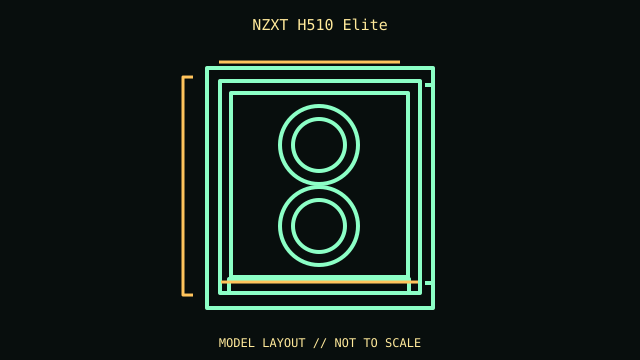

[ IDENTIFIED ENCLOSURE // ATX TEMPERED-GLASS MID-TOWER ]
NZXT H510 Elite
210 × 460 × 428 mm (W × H × D, feet included); ATX tempered-glass mid-tower. Board fit: ATX, microATX and Mini-ITX; seven horizontal slots and two vertical positions (vertical mounting hardware is separate). GPU: Up to 381 mm with the front fan/radiator stack absent; front cooling hardware reduces the usable length. CPU cooler: 165 mm maximum CPU-cooler height. Radiator: Front up to 280 mm and rear up to 120 mm; top position is for a 120/140 mm fan, not a top radiator. PSU: NZXT does not publish a strict maximum PSU length; approximately 180 mm or shorter is a practical target with the drive cage/cables installed. Measure longer units against the exact layout.

REVISION / CONFIGURATION CAVEAT: H510 Elite is the glass-front Elite version with Smart Device V2; it is not interchangeable with H510 Flow or later H5 cases. GPU maximum changes with the front radiator/fan stack.
Mechanical specifications and fit
| Exact model | NZXT H510 Elite — ATX tempered-glass mid-tower. |
|---|---|
| Dimensions and construction | 210 × 460 × 428 mm (W × H × D, feet included); see cited manufacturer page/manual for measured envelope and revision-specific detail. |
| Motherboard form-factor fit | ATX, microATX and Mini-ITX; seven horizontal slots and two vertical positions (vertical mounting hardware is separate). |
| GPU clearance | Up to 381 mm with the front fan/radiator stack absent; front cooling hardware reduces the usable length. |
| CPU-cooler clearance | 165 mm maximum CPU-cooler height. |
| Radiator clearance | Front up to 280 mm and rear up to 120 mm; top position is for a 120/140 mm fan, not a top radiator. |
| PSU clearance | NZXT does not publish a strict maximum PSU length; approximately 180 mm or shorter is a practical target with the drive cage/cables installed. Measure longer units against the exact layout. |
| Drive mounts | Two 3.5-inch trays plus one dedicated 3.5-inch position; two 2.5-inch trays plus one dedicated 2.5-inch position. |
Compatibility and service notes
Preserve the tempered-glass panels, vertical-slot covers and Smart Device wiring; transport glass separately when possible. Confirm front radiator depth and GPU length together.
- Check GPU length and thickness, its power-plug bend, cooler height and radiator/fan assembly against the same installed configuration; advertised maxima may conflict.
- Confirm motherboard standoffs match the board holes and inspect front-panel, USB and fan-controller headers before powering the build.
- Record the exact SKU, manual revision, removed brackets and unused drive hardware. Measure the individual chassis before shipping or fitting nonstandard parts.
Manufacturer and manual sources
- NZXT H510 Elite — manufacturer product specificationsManufacturer product/model page; use the SKU and configuration that match the specimen.
- NZXT H510 Elite — user manualModel-specific installation/manual reference for mounting diagrams and configuration limits.
Clearance limits describe separate manufacturer fit conditions; they are not a promise that all maximum-size parts fit simultaneously. Confirm the exact revision before purchase or installation.